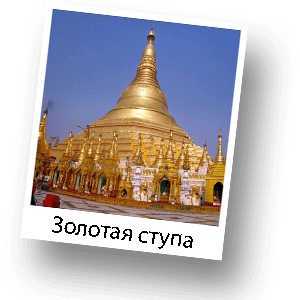

Архитектура Таиланда
Буддизм не нуждается в храмовых комплексах в привычном понимании христиан. Все буддистские сакральные сооружения не совсем верно называть храмами.
Основное культовое сооружение буддистов – ступа. Ступа изначально представляла собой холм земли - курган над захоронением. Чтобы сохранить холм в период дождей, его начали обкладывать камнем и возводить на постаменте. Ступа представляет собой модель Вселенной: классическая полусферическая форма символизирует небосвод; шпиль представляет собой мировую ось; квадратная платформа или ступенчатая терраса вокруг ступы символически приглашают верующего начать восхождение к божественной вершине.
Ступа ориентирована по сторонам света, взойти на нее или на террасу, ее окружающую, как правило, можно с четырех сторон. Однако, самая священная лестница находится на востоке.
В Таиланде примерно 27 тыс. буддистских монастырей – ватов. В маленьких ватах иногда живут всего несколько монахов, в больших – сотни и даже тысячи. Когда в 1997 году до Таиланда докатился кризис, потрясший экономику всех стран Юго-Восточной Азии, тайцы по-своему поняли его причину – карма загрязнилась. Чтобы ее очистить, они стали еще активнее, чем прежде, жертвовать деньги на строительство храмов.
Для тайской культовой архитектуры характерны храмовые ансамбли. Тайские храмы с их белыми стенами из камня и кирпича, многоярусными крышами, покрытыми разноцветной черепицей или позолотой, с богато украшенными наличниками окон и дверей -очень нарядны. Имеющие строго геометрическую или свободную планировку, храмовые ансамбли, помимо основной группы построек – зданий для размещения храмовых святынь и проведения религиозных церемоний, включают в себя большую группу вспомогательных сооружений. Одни из них используются для хранения изображений Будды и священных текстов, другие же служат убежищем от дождя и солнца.
Алтарные ниши иногда служат хранилищами останков ревностных служителей буддизма.
В позднем Средневековье в Центральном и Южном Таиланде были распространены храмы с высокой боковой стеной. Этот тип архитектуры стал популярным во всей стране.
Культ почитания изображений и многочисленных отпечатков ступней Будды - дань великому человеку, которому верующие и неверующие приносят пожертвования, состоящие обычно из цветка лотоса, листочка сусального золота, благовонной палочки, свечи и гирлянды цветов. Свеча зажигается от масляного фонаря или горелки, которые помещены рядом с местом принесения даров. Если такого огня нет, можно воспользоваться уже горящими свечами.